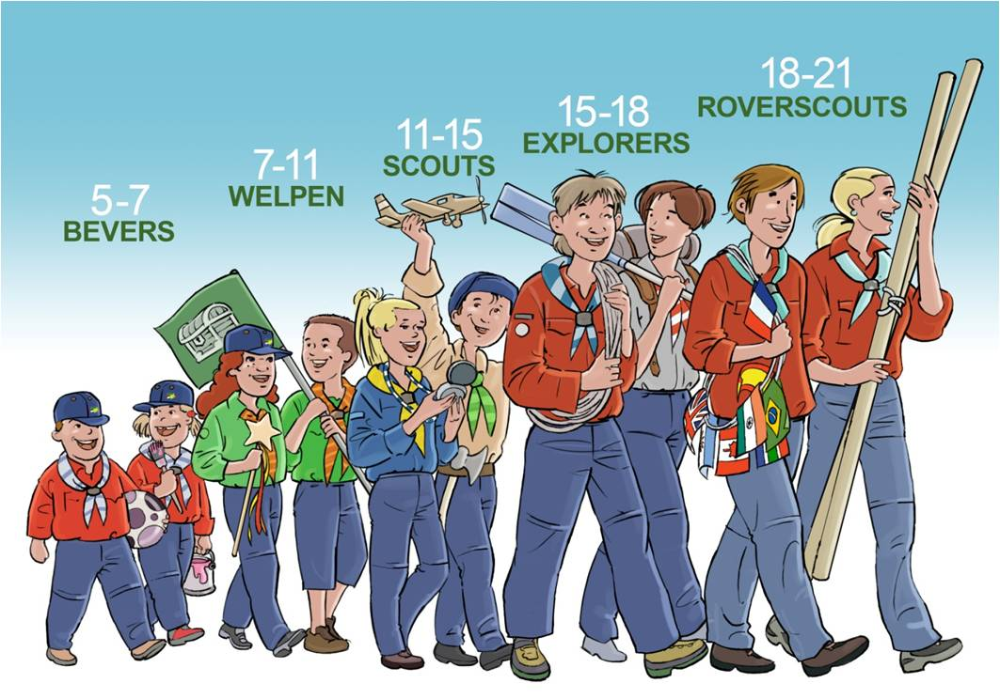
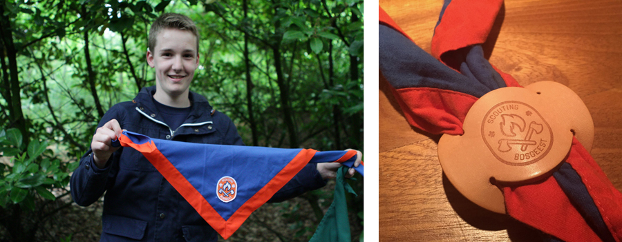
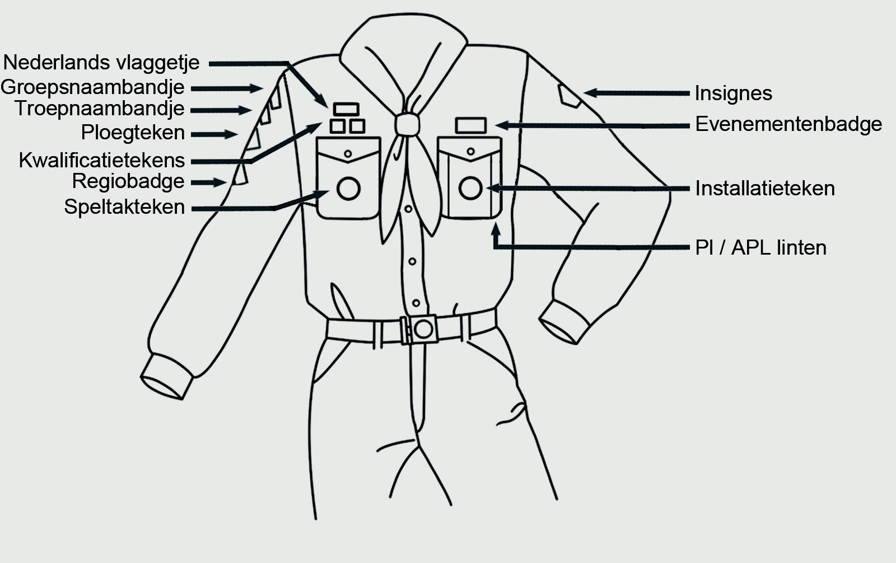

Scoutfit
Scoutfit
Als je lid bent van de groep draag je een Scoutfit blouse. De blouse koop je in de Scoutshop of online. Op www.scoutshop.nl kan je ze gelijk online kopen en via www.scoutshop.nl/winkels vind je de dichtstbijzijnde winkel in de buurt. Op dit moment is dat de Scoutshop Haarlem.
Soms heeft het leidingteam tweedehands blouses. Op marktplaats zijn deze ook te koop, maar let er wel op dat je dan de juiste blouse koopt: de blouses in de ‘oude stijl’ zijn niet meer welkom! Naast de scoutfitblouse is het de bedoeling dat je een blauwe broek draagt. Voor de koudere dagen is er een groepstrui. De trui aanschaffen is een vrijwillige keuze.
Kopen van een Bosgeest trui
Voor in de winter of koele zomeravonden op kamp zijn er de Bosgeest truien. Jeugdleden dragen de blauwe en leiding en bestuursleden dragen de Oranje kleur. Truien zijn aan te schaffen bij Decrowear in Noordwijkerhout. De Kinder- en Volwassenen maten houden ze op voorraad en zijn dus ook te passen.
Kosten voor een trui zijn €36,40 per trui, je naam op de trui kan voor €4,95
Contactgegevens en openingstijden:
Adres: Decrowear & Gifts B.V. & Decrotech B.V.
Pletterij 37, 2211 JT Noordwijkerhout
Email: info@decrowear.nl Telefoon: +31 (0)252 - 25 06 30
Openingstijden: maandag t/m vrijdag van 08:00 tot 17:00 uur.
Mocht het echt binnen de openingstijden van Decrowear niet lukken, bel ze dan even om te vragen wat er mogelijk is.
Als je vervolgens geïnstalleerd wordt krijg je het een en ander bij uitgereikt, zoals badges en de das met dasring. Hieraan kan iedereen zien dat je een Scout bent, wat voor een Scout en waar je vandaan komt. Ook begint met een Scoutfit iedereen gelijk. Je kunt zo dus niet aan iemand zijn kleren zien of iemand rijk of arm is.
De Scoutfit
Iedereen op scouting draagt een scoutfit. Hieraan kan iedereen zien dat je een Scout bent, wat voor een Scout en waar je vandaan komt. Ook is iedereen met een Scoutfit gelijk. Je kunt niet aan iemand zijn kleren zien of iemand rijk of arm is.
Elke speltak binnen Scouting heeft een eigen kleur Scoutfit. Als je lid wordt van een speltak koop je zelf de juiste kleur scoutfitblouse. Hieronder zie je een afbeelding van de verschillende Scoutfits die binnen onze groep worden gedragen.

Nadat je geïnstaleerd wordt, krijg je het een en ander uitgereikt. Denk hierbij aan
- Speltakteken van de speltak waartoe je behoort
- Scouting Nederland Installatieteken
- Groepsnaambandje
- Regiobadge
- Scouts krijgen patrouillelinten en Welpen nesttekens
Ook wordt hier de das met dasring uitgereikt. Elk lid moet zelf voor €12,50 de blauw-oranje groepsdas met dasring kopen.
Met de complete scoutfit hoor je er dan helemaal bij!

Extra insignes, badges en attributen
Extra insignes kun je behalen tijdens opkomsten of door hier zelf thuis je best voor te doen. Een insigne heeft dus altijd te maken met een prestatie of een vaardigheid die je hebt opgedaan. Je krijgt deze van de leiding als je hebt voldaan aan de eisen die voor een insigne gelden.
Badges en kleine naambandjes krijg je vaak als herinnering aan een evenement. Denk hierbij aan groepskampen of regionale en landelijke activiteiten. Deze krijg je vaak als bewijs van deelneming. Zodra een evenement weer heeft plaatsgevonden, moet je de oude badge van dat evenement weer van je Scoutfit verwijderen.
Scouting badges kun je vaak ook zelf kopen, bijvoorbeeld van een kampeerterrein waar je bent geweest. Hier ben je zelf helemaal vrij in! Dit geldt ook voor bijzondere dasringen.
Er zijn natuurlijk ontzettend veel attributen voor bij je Scoutfit, denk aan een fluitkoord, een Scoutingriem en een zakmes. Per speltak gelden hiervoor regels. Vraag hier naar bij je leiding, reken erop dat je het altijd zelf moet aanschaffen.
Wanneer draag je de Scoutfit?
De Scoutfit draag je tijdens het openen en sluiten van een kamp of opkomst, gedurende de opkomsttijden en als je op pad gaat. De leiding geeft aan wanneer het anders is, bijvoorbeeld als het erg heet is of als we erg vies gaan worden!
T-shirts, truien, polo's
In de Scoutshop zijn veel T-shirts en truien te krijgen van Scouting. Ook zul je weleens als herinnering aan een kamp een T-shirt krijgen. Sommige speltakken maken eigen T-shirts en truien. Erg leuk en handig om deze aan te hebben tijdens kampen, naar school en onder je Scoutfit, maar het is dus geen Scoutfit! Doe dus gewoon altijd je Scoutfit aan als je naar de opkomst komt of op kamp gaat.
Wat moet waar?
Op onderstaande plaatje is duidelijk te zien waar welke onderdelen horen. Vraag je leiding als er iets niet duidelijk is. Badges en kleine naambandjes krijg je vaak als herinnering aan een evenement. Denk hierbij aan groepskampen of regionale en landelijke activiteiten. Deze badges en naambandjes draag je op je rechtermouw. Deelnemersbadges van bijzondere activiteiten zoals Jamboree's mag je boven je linker borstzakje dragen.
Welpen hebben naast de attributen op onderstaand plaatje ook nog een nestteken en eventueel gids- of helpertekens. Deze tekens horen thuis op de linkermouw bovenaan. Scouts dragen patrouille linten die bevestigd worden op de linker schouder.
